Une toute petite partie de mon "World Wild Wall" d'inspiration
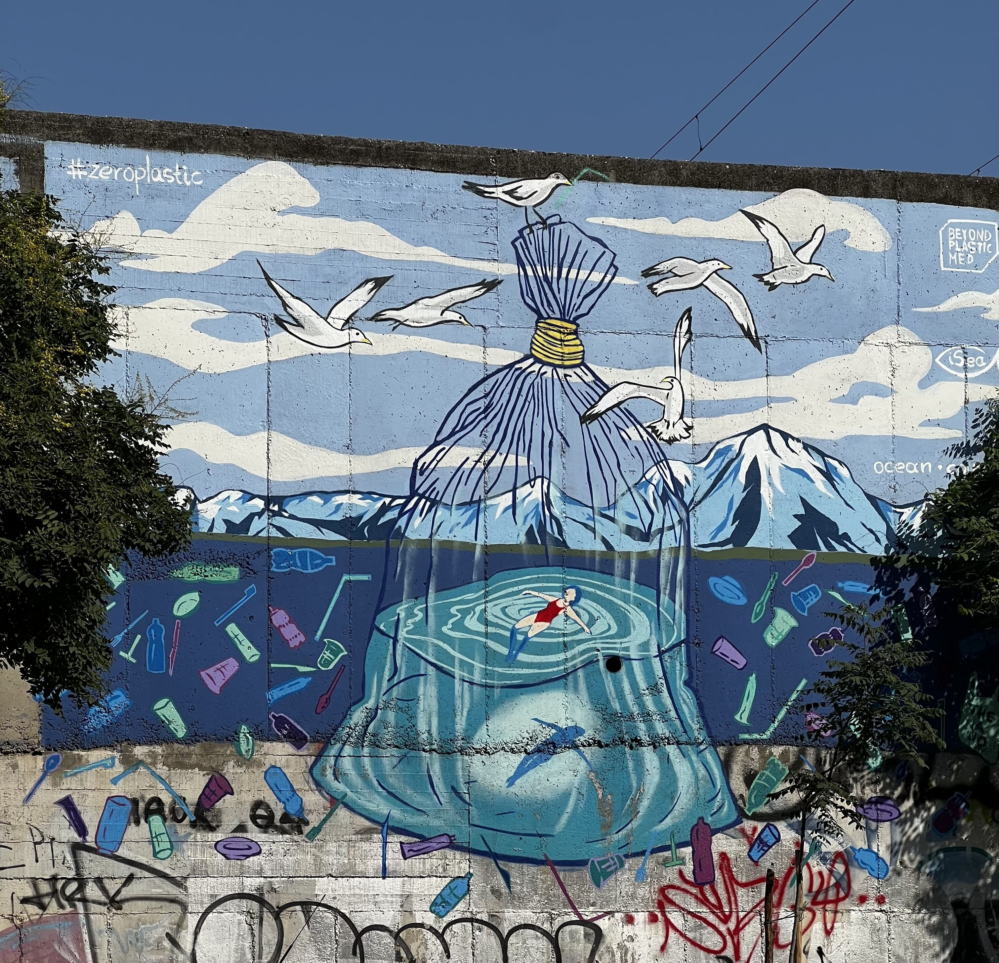 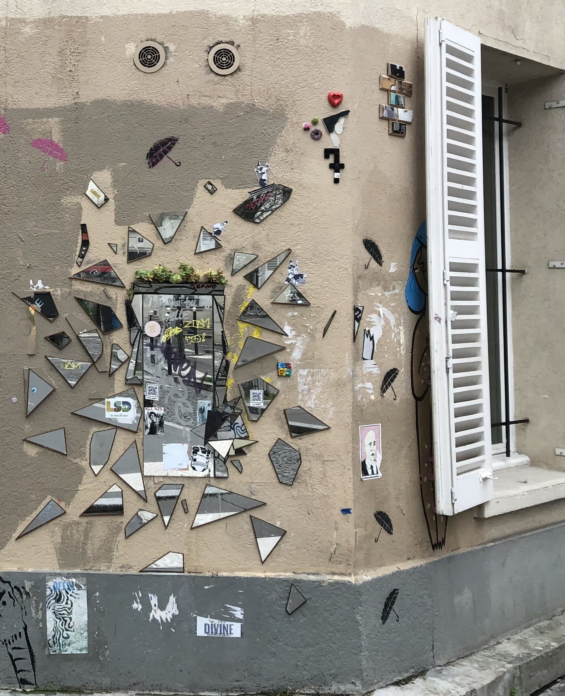 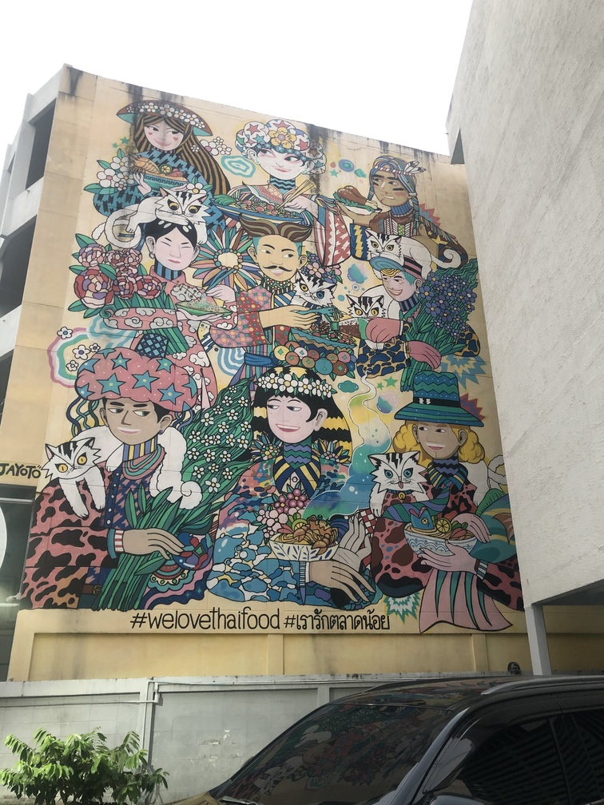 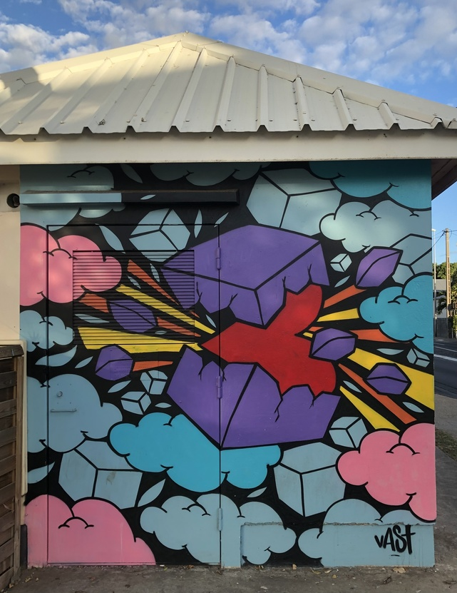 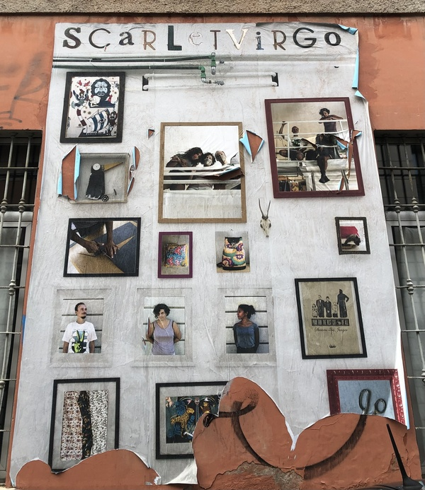
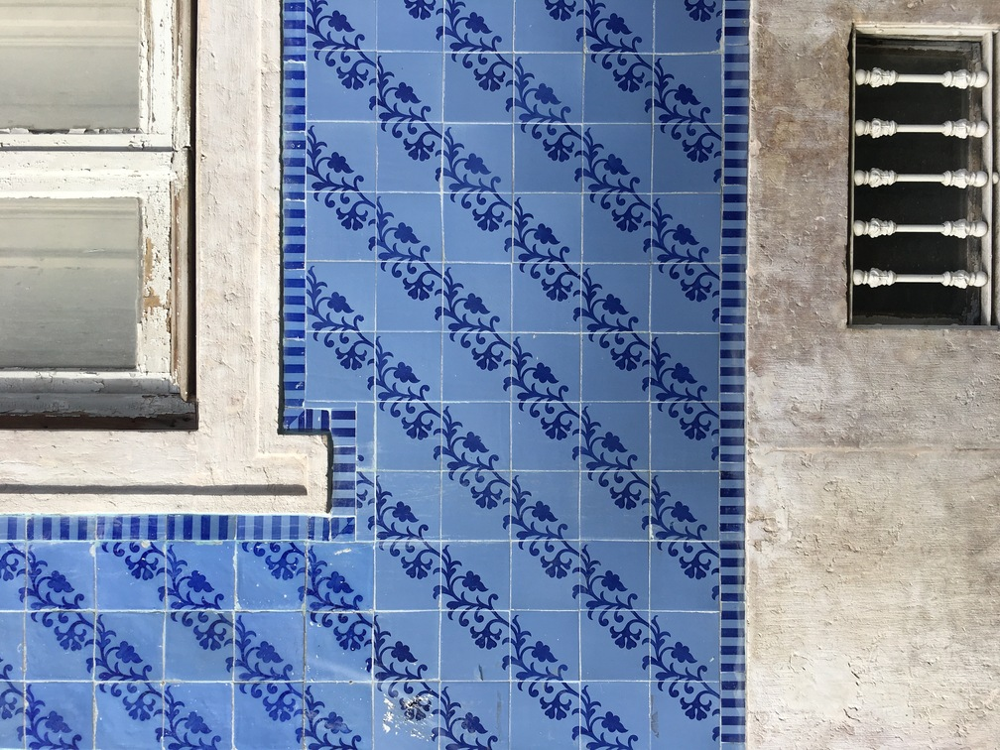
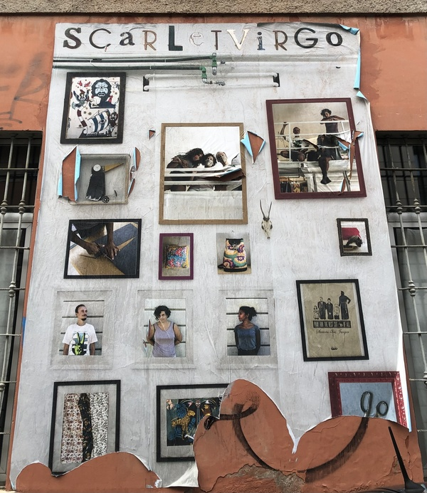
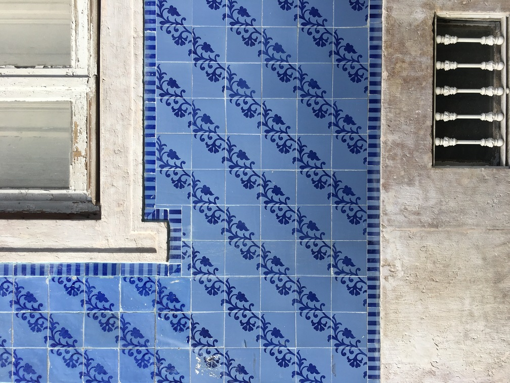

Je suis Rachel, actuellement étudiante en formation à distance en DEUST Webmaster et Métiers de l'internet à l'Université de Limoges. Attirée par les visuels et leurs impacts, intéressée par les outils numériques et curieuse de les maîtriser, je me forme au webdesign et à la communication digitale, tout en intégrant l'IA et les bases de la programmation. Mon univers visuel découle naturellement de tout ce que j’ai pu voir, échanger, lier et apprécier dans ma vie, et de tout ce qui a pu me toucher jusqu’à maintenant. Grande fan de street art et tout ce que la rue peut nous apporter comme création, réflexion et rencontre, c'est tout naturellement que m'est venu Rue Rachel, qui est à la fois le projet de boutique de dépôt-vente que je prépare et l’identité que je souhaite insuffler dans les projets / créations web qui me seront confiées.
Une toute petite partie de mon "World Wild Wall" d'inspiration
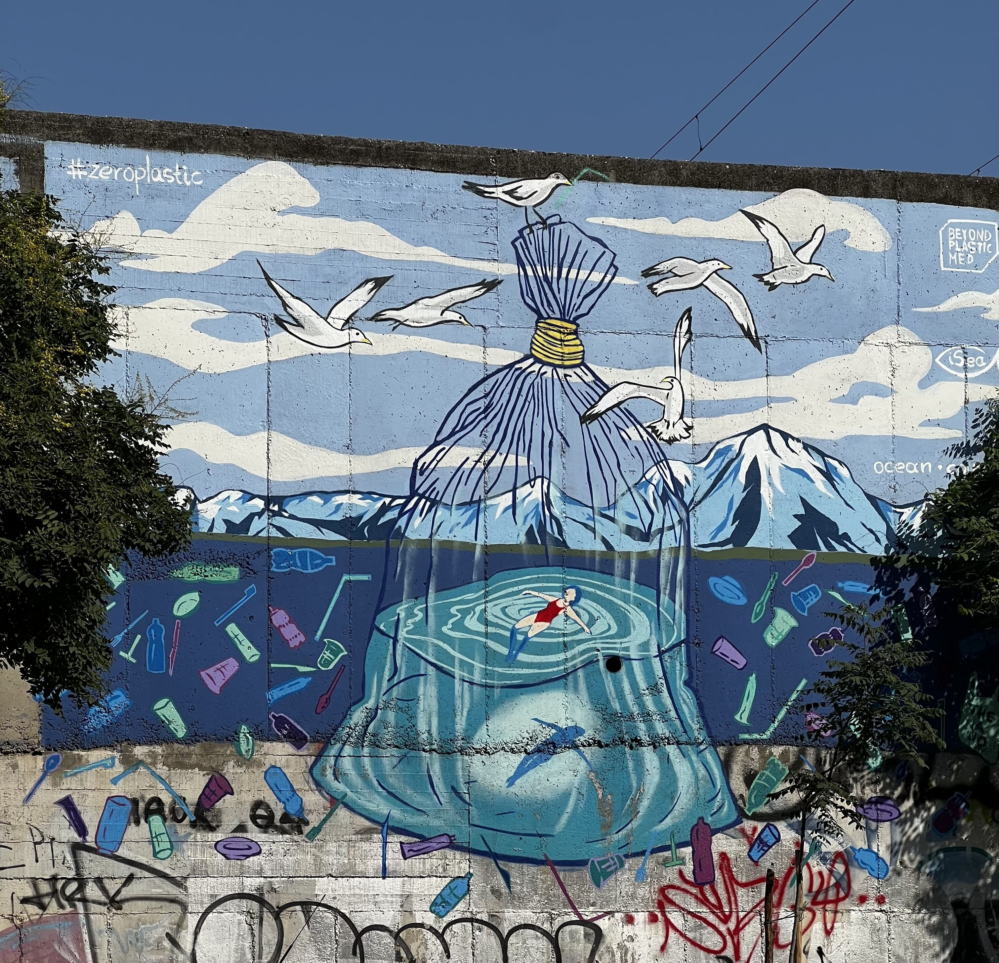 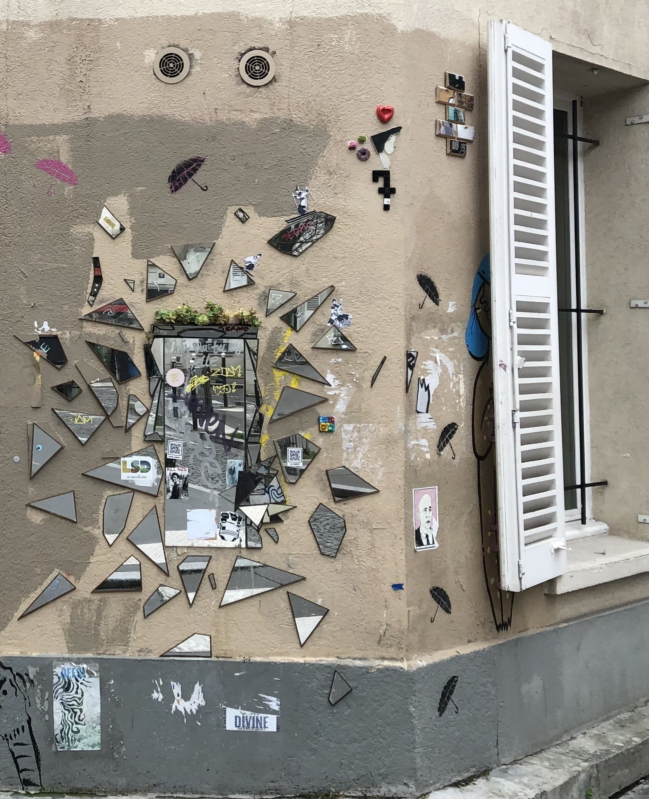 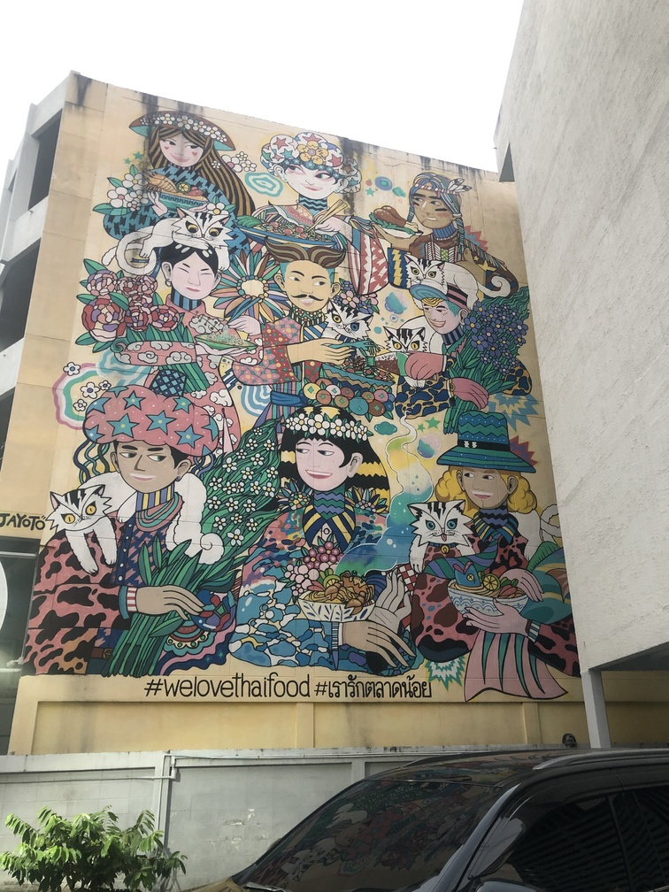 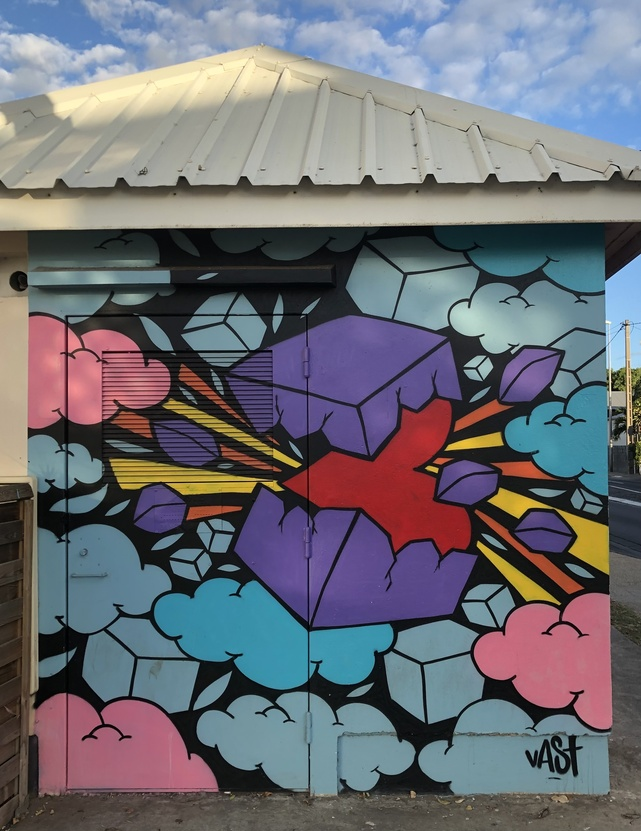
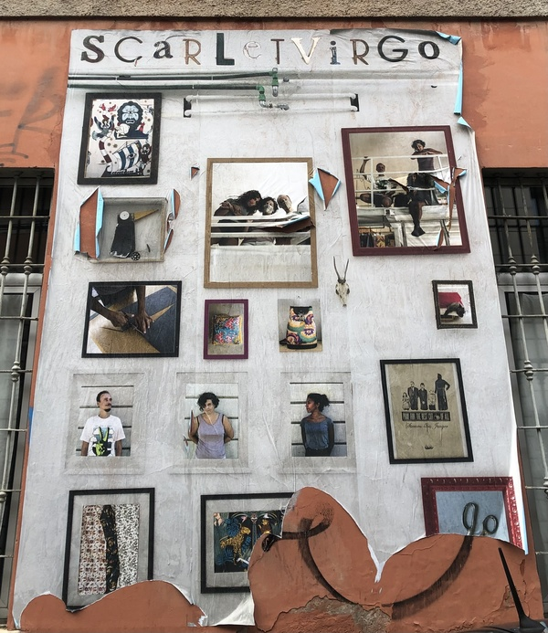
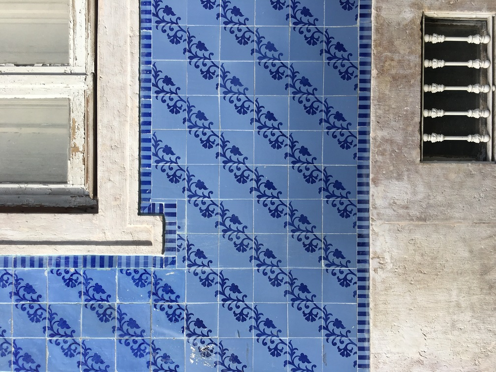